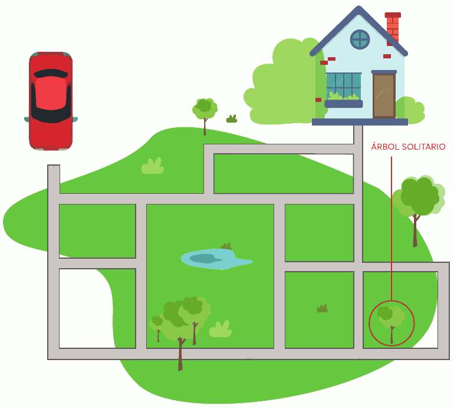
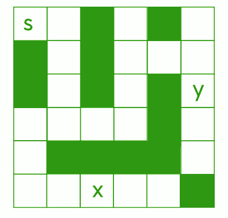

Actividad 2. Camino a casa
Heriberto necesita llegar a su casa y usa un automóvil autónomo (que está en un estadio rudimentario de desarrollo, muy lejos de la inteligencia artificial deseada por sus realizadores). El automóvil está programado con sólo tres instrucciones:
I: girar 90° a la izquierda.
D: girar 90° a la derecha.
A: avanzar hasta el próximo cruce.

CÓMO ESCRIBIR LAS RESPUESTAS:
Abre el programa LibreOffice Writer y ve escribiendo en un documento las respuestas a todas las preguntas y retos planteados. Pega también las imágenes que vayas modificando con GIMP.
PREGUNTA
Utilizando las tres instrucciones anteriores, ¿puedes escribir un algoritmo que guíe al personaje a su casa por el camino más corto (en cantidad de instrucciones)?
PISTA
Como ejemplo, compartimos un algoritmo que lleva al automóvil desde el origen hasta el pino solitario: A, A, A, I, A, A, A
-———————————————— ————————————————– —
PARA SABER MÁS
Las computadoras sirven para realizar tareas bien definidas, y para ello es necesario programarlas. La programación se realiza mediante un lenguaje computacional que las máquinas son capaces de interpretar y ejecutar. Este lenguaje es diferente al que utilizan las personas puesto que está compuesto de instrucciones claras, concisas e inequívocas.
Un algoritmo se convierte en programa cuando un programador lo traduce en instrucciones que el ordenador puede interpretar y ejecutar (en este caso, el automóvil autónomo).
Los ordenadores siempre ejecutan las instrucciones de un programa al pie de la letra desconociendo las intenciones del programador y el problema por resolver.
En la tarea anterior, si el programa es correcto (no contiene errores), el automóvil hará lo que se le ha indicado y así resolverá el problema (en este caso, conducir a Heriberto a su hogar). Ahora bien, si el programa guía el automóvil a otro sitio, aunque sigue siendo un programa válido, no resuelve el problema. Por último, si el programa tiene instrucciones no reconocibles (recordar que sólo acepta I, D y A), el ordenador no sabrá qué hacer y entonces dará un mensaje de error.
Los ordenadores, independientemente de su forma y propósito (de escritorio, teléfonos inteligentes, robots de entretenimiento o industriales, etc.), siguen las instrucciones que les indican los programas que se les cargan. Los programas de ordenador son deterministas, es decir, si siempre se ingresan los mismos datos, el programa realizará los mismos cálculos y entregará los mismos resultados.
Uno de los trabajos de los científicos de las ciencias de la computación es encontrar los algoritmos más eficientes. Es decir, aquéllos que resuelven un problema en el menor tiempo, usando la menor cantidad de recursos (por ejemplo: memoria, acceso a disco rígido, uso de red, etc.).
Al realizar búsquedas en internet, los buscadores utilizan algoritmos para recuperar la información solicitada y seleccionar y visualizar los resultados en el menor tiempo posible, entendiendo que la eficiencia en estos casos está conseguida al recuperar y analizar un gran volumen de datos en pocos segundos.
-———————————————— ————————————————– —
DESAFÍO 2. El robot en su laberinto
El siguiente laberinto contiene dos tesoros marcados como X e Y. Los bloques negros muestran dónde están situadas las paredes y los bloques blancos indican los caminos por los que podría viajar un robot.

Las instrucciones que puedes dar al robot son las siguientes:
Ax: avanzar x bloques ( A3 –> avanzar 3 bloques; A5 –> avanzar 5 bloques).
D: girar a la derecha 90°.
I: girar a la izquierda 90°.
T: recoger tesoro.
Inicialmente, el robot está en la posición S y está mirando hacia la derecha del mapa. El robot sólo puede recoger el tesoro si está en la misma casilla del mapa que el tesoro.
PREGUNTAS
-
¿Cuál es el algoritmo necesario para programar al robot ( saliendo de la casilla S ) con el objetivo de recoger el tesoro marcado con X?
-
¿Cuál es el algoritmo necesario para programar al robot ( saliendo de la casilla S ) con el objetivo de recoger el tesoro marcado con Y?
RETO
Edita la imagen del laberinto del robot (utilizando, por ejemplo, GIMP) y borra las letras S, X e Y.
A continuación, define una nueva posición de salida (S) y dos nuevas posiciones X e Y para los tesoros, dibujando estas letras en la propia imagen.
Finalmente, indica los algoritmos necesarios para que, saliendo de la nueva posición S, el robot sea capaz de llegar a las nuevas posiciones X e Y.